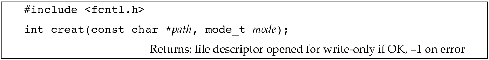
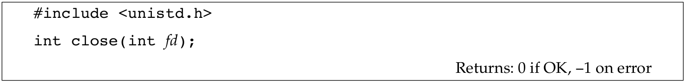
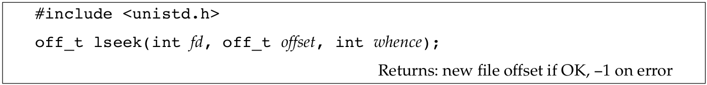
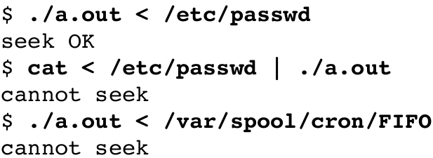
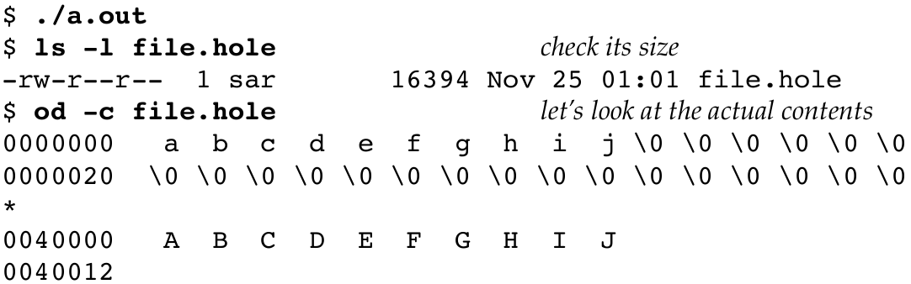
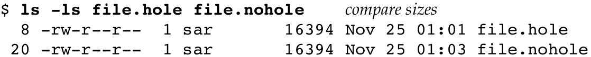
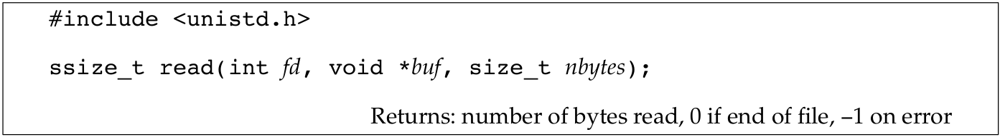
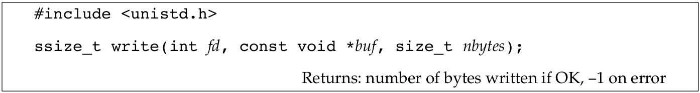

文件I/O
Table of Contents
1 介绍
本文主要讨论UNIX系统的文件I/O函数，大多数文件操作仅需通过五个函数就可以完成：open，read，write，lseek以及close．后面会看到各种各样的buffer大小会对read以及write函数产生影响．
本文所描述的函数都是unbuffered I/O，与之相对的是标准I/O函数，后面会介绍．词语unbuffered（无缓存）对应每个read和write都会调用内核里的系统调用．
当涉及到在多个进程间共享资源时，原子操作的概念就变得重要起来．在open函数的参数里会关心文件相关的原子性，就会引出文件是如何在多个进程间共享以及牵涉到的内核数据结构．后面还会介绍下其它函数．
2 文件描述符
对于内核来说，所有打开的文件都可以通过文件描述符来引用到，一个文件描述符是一个非负的整数．当打开或新建一个文件时，内核都会返回一个文件描述符给进程．当在读写文件时，传给read或write的参数是由open或creat函数返回的文件描述符．
传统上，UNIX系统的shell将进程的标准输入关联到文件描述符0，1关联为标准输出，2关联标准错误．这种惯例被很多shell以及应用呈现使用，但这不是UNIX内核的特点．
使用定义在<unistd.h>里的STDIN_FILENO，STDOUT_FILENO以及STDOUT_FILENO来代表0，1和2程序的可读性会更好．
3 open和openat
一个文件可以通过open或openat函数来创建：

Figure 1: open和opeanat函数
图里最后一个参数显示为…，这是说剩下的参数个数以及类型都是不确定的．对于这两个函数来说，最后一个参数在新创建文件时会使用，这个参数就是注释里的mode参数．
path参数是要打开或创建的文件．这两个函数有多个选项，由oflag参数指明，该参数由下面来自<fcntl.h>的常量以OR的形式组成：
O_RDONLY：以只读打开．
O_WRONLY：以只写打开．
O_RDWR：以可读可写打开．
O_EXEC：以只执行打开．
O_SEARCH：仅搜索打开（用于目录），本系列介绍的操作系统没有支持这个标志．
前面的五个标志，有且仅能有一个存在，而对于下面的标志则是可选的：
O_APPEND：每次写都写在文件尾．
O_CLOEXEC：设置文件描述符的FD_CLOEXEC标志，后面有文章会详细介绍．
O_CREAT：如果文件不存在就创建它．该选项需要open的第三个参数（openat的第四个参数），就是mode参数．该参数指明了新创建文件的访问权限，后面会介绍如何如何指定mode参数以及使用umask可以改变它的值．
O_DIRECTORY：如果path指定的不是一个目录就生成错误．
O_EXCL：在O_CREAT指定的情况下，如果文件已经存在了，就生成一个错误．测试文件是否存在以及如果不存在就创建是原子的操作，关于原子操作后文会有更详细的介绍．
O_NOCTTY：如果path指向的是一个终端设备，那么不要把这个设备文件作为控制终端分配给当前进程．后文还会介绍关于控制终端的更多细节．
O_NOFOLLOW：如果path指向的是符号链接，生成一个错误．其它系列文章会介绍符号链接的细节．
O_NONBLOCK：如果path指向一个FIFO，或者一个块特别文件，或者字符特别文件，该选项会对打开的文件以及随后的I/O设置非阻塞模式．
O_SYNC：对于每一个write操作都等待物理I/O操作的完成．
O_TRUNC：如果文件存在，并且以只写或读写打开成功了，就把长度截短成0．
O_TTY_INIT：当打开一个没有打开过的终端设备时，给termios参数设置值，后面有文章在讨论终端I/O时，会介绍termios结构体．
由open和openat返回的文件描述符担保是最小未使用的描述符．有些应用软件会利用这一事实，在标准输入，或标准输出，或者标准错误上打开文件，然后关闭它．比如先关闭标准输出，然后再打开另一个文件，这样就知道了打开的文件一定是使用描述符1．后面在介绍dup2时，会看到一个更好的方式来做到在给定的描述符上打开文件．
open和openat函数的不同在于有无fd参数．这有三种可能性：
- path参数指向的是绝对路径，这种情况下，fd参数被忽略了，openat函数的行为与open一致．
- path参数指向的是相对路径，并且fd参数指向相对位置从哪里开始计算．
- path参数指向的是相对路径，而fd有特殊的值AT_FDCWD时，这时开始点的目录就是当前工作目录，这时openat和open函数的行为一致．
openat函数的存在主要为了解决几个问题，首先它提供了一种方式，可以使得线程以相对路径名打开文件，而不是以当前目录打开文件．后面会有文章介绍到，在同一个进程里的线程共享相同的当前目录，这对于在相同进程里的多线程工作在不同的目录的情况却是困难的．再者，可以避免time-of-check-to-time-of-use（TOCTTOU）错．
所谓TOCTTOU错，就是程序在调用了两个文件相关的操作时，就会容易出些问题，因为第二个调用要依赖第一个调用的结果．因为这两个调用不是原子的，在这两个系统调用之间，文件可能会改变，因此可能会无效第一个调用的结果，这就可能会导致程序错误．
4 creat函数
一个新文件也可以通过调用creat函数来创建．

Figure 2: creat函数
注意这个函数等价于：
open(path, O_WRONLY | O_CREAT | O_TRUNC, mode)
后面在描述文件访问权限的细节时会进一步介绍mode参数．
5 close函数
一个打开的文件可以通过调用close函数来关闭：

Figure 3: close函数
当进程退出时，所有打开的文件都会被内核自动关闭．许多程序都利用这一点从而不用显示的关闭打开的文件．
6 lseek函数
每一个打开的文件都有一个与之关联的当前文件偏移，它通常是一个非负的整数，代表着从文件开始的字节数．读写操作通常是由当前文件偏移之始，并且读写完毕会加上读写的字节数．在不指定O_APPEND的情况下，当打开文件时这个偏移通常是0．
一个打开的文件其偏移可以通过lseek函数来设置：

Figure 4: lseek函数
对于offset如何解释要依据whence参数：
- 如果whence是SEEK_SET的话，文件的偏移被设置为自文件起始的offset个字节．
- 如果whence是SEEK_CUR，文件的偏移就设置成当前的偏移加上offset，offset可以是正或负．
- 如果whence是SEEK_END，文件的偏移被设置成文件的大小加上offset，offset可以是正或负．
由于lseek返回新的文件偏移，可以从当前位置seek到0个字节来得到当前的偏移：
off_t currpos; currpos = lseek(fd, 0, SEEK_CUR);
该技术也可以用来确定一个文件是否可以进行seeking．如果文件描述符指向的是pipe，FIFO，或者是socket，lseek会设置errno为ESPIPE并且返回-1．
Example
下面的程序测试来自标准的输入是否是可seek的：
#include "apue.h" int main(int argc, char *argv[]) { if (lseek(STDIN_FILENO, 0, SEEK_CUR) == -1) printf("cannot seek\n"); else printf("seek OK\n"); return 0; }
调用这个程序，输出如下：

通常情况下，一个文件的偏移必须是非负的整数．但是，某些设备的偏移可以是负的．对于常规文件来说，偏移必须是非负的．因为可能会有非负的值，这样就必须小心的和-1进行比较，而不是只是测试是小于0.
lseek仅是记录了在内核里当前文件的偏移，而并没有发出任何的I/O操作．这个偏移随后被下个读或写操作使用．
文件偏移是可以大于文件大小的，在这种情况下，写将会扩展文件．这就是在文件中创造了一个洞，这是允许的．在文件中没有实际写入的部分都是0．
文件中的空洞是不要求实际的存储空间的．取决于文件系统的实现，当在文件尾之后写入时，可能会分配新的磁盘块来存储数据．但是对于旧文件尾和实际写入的位置之间却没有必要分配磁盘块．
Example
下面的程序在文件中创建了一个空洞：
#include "apue.h" #include <fcntl.h> char buf1[] = "abcdefghij"; char buf2[] = "ABCDEFGHIJ"; int main(void) { int fd; if ((fd = creat("file.hole", FILE_MODE)) < 0) err_sys("create error"); if (write(fd, buf1, 10) != 10) err_sys("buf1 write error"); if (lseek(fd, 16384, SEEK_SET) == -1) err_sys("lseek error"); if (write(fd, buf2, 10) != 10) err_sys("buf2 write error"); exit(0); }
运行这个程序可以得到如下的结果：

Figure 6: 在文件中创造空洞
使用od程序可以查看这个文件的内容，-c选项是说以字符形式打印文件的内容．可以看到没有写的文件部分是0．每行开始的七个数字是八进制的字节偏移．
通过创建一个一模一样大小但是没有空洞的文件：

Figure 7: 比较大小
可以知道，没有空洞的文件占据20个磁盘块，而有空洞的文件占据仅仅8个磁盘块．后面还会介绍更多关于空洞的细节．
lseek使用的偏移是off_t类型的，实现上在不同的平台上允许不同的大小．大致有两种大小，32和64比特的文件偏移，sysconf可以用来获得这个大小．
7 read函数
通过read函数，数据可以从打开的文件里读出来．

Figure 8: read
如果读成功返回，读取了多少个字节会被返回．如果遇到了文件尾，返回0．
有以下一些情况，实际读到的字节数会少于所请求的：
- 从常规文件读时，在能读取所请求的字节数前，先到达了文件尾．举个例子，离文件尾只有30字节时，却尝试读取100字节，read返回30．再下一次读时，返回0．
- 从终端设备读时，通常一次只能读取一行，后面也会看到怎样改变这种默认行为．
- 从网络读时，缓存大小也可能小于所请求的数量．
- 当从pipe或FIFO读时，如果pipe包含的字节数小于所请求的，read也仅会返回所能提供的．
- 当从条目记录性设备读取时，一次可以返回单条记录．
- 被一个信号中断，此时只读取到了部分数据．
read函数从当前的文件偏移开始读，在返回之前，偏移会增加实际读取了多少字节．
8 write函数
通过write函数，可以向一个打开的文件写入数据．

Figure 9: write
返回值通常等于nbytes．而引起错误可能是磁盘满了或者超过了一个进程的文件大小限制．
对于常规文件，写操作开始于当前文件偏移处，如果在打开文件时给出了O_APPEND标志，则在每次写前，文件的当前偏移都会设置到文件末尾．在成功写入后，文件偏移实际增加写入了多少字节．